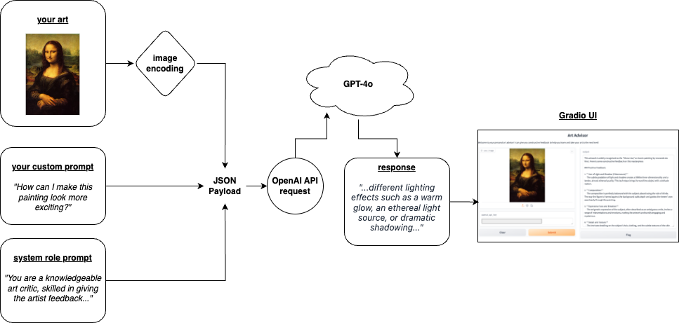
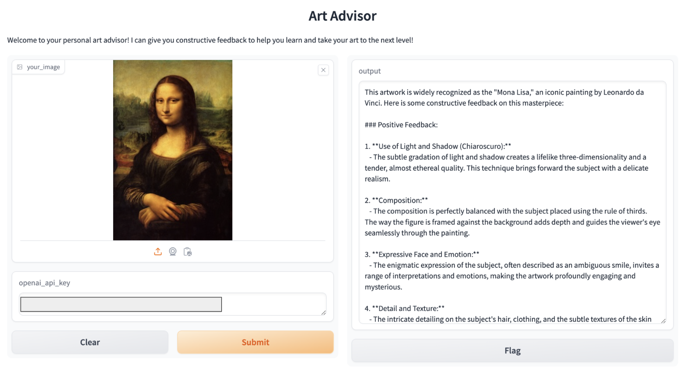

AI Art Advisor
A smart, constructive, easy-to-use personal art critic!

Introduction
In the past couple of years, generative AI models have become incredibly powerful and capable of creating very high-quality images from just a short text prompt. Many state of the art diffusion-based image generation models are publicly available (such as DALL-E, Midjourney, Stable Diffusion, etc.).
For many artists and creatives, this has created high levels of (justified) anxiety and general fear surrounding AI technology. Will AI art replace artists? What is the role of these generative models in the creative world, or does it even exist?
While AI generated art is certainly a threat to "genuine" artists, I believe that with the right application we can use assist artists rather than replace them!
Approach
To illustrate a potential application of these models to benefit artists, I created a prototype "AI art advisor" using the latest vison-language model GPT-4o ("omni") from OpenAI. This new GPT model now has vision capabilities, so, I was inspired to ask the question: how well can it understand art?
Implementation
This project was created using the OpenAI API and mostly based off of the official docs for the vision API. Then integrated the functionality with a simple Gradio web app.
There is a simple user interface where the user can upload any image (png or jpg format) of their art, along with their API key and any specific requests. In the backend, these inputs are parsed into several API calls to GPT-4o. In the API call, the system is told its role as an art advisor that gives constructive feedback (both negative and positive). Finally, the response is returned and formatted into clean markdown format before being printed out in the Gradio app interface.
Below is a simple flow diagram to describe this implementation:

Features
Basic Input
Image upload, API key, specific question, language
Tone/difficulty Selection
Choose desired skill level -> system will speak to you in a tone that is easier to understand.
For example if you are a beginner it will use simpler words and easy analogies.
Results
Try it yourself!
Upload your own artwork and try out the tool with the demo below! The Huggingfaces Demo is currently not running, I am working on fixing this soon!
Example use case
The interface of the Gradio app along with an example use case is shown below using the famous Mona Lisa by Leonardo da Vinci.
